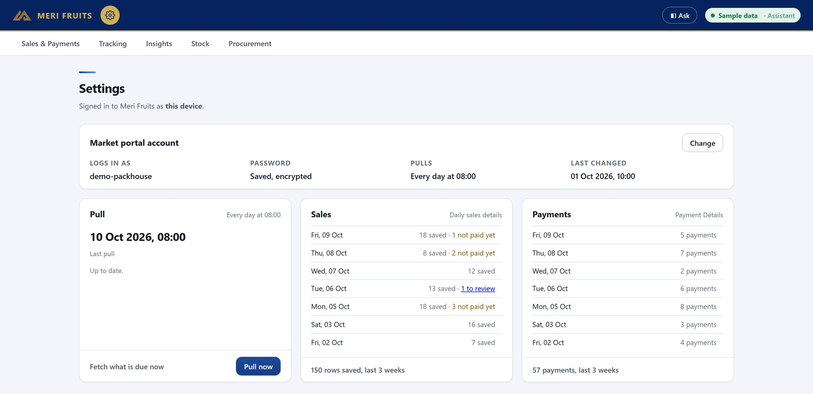

01 · Daily pull
Yesterday's reports, on the book by 8am.
Every morning Meri Fruits signs in to the market's portal, collects yesterday's sales and payments, and saves them for you.
- Sales and payment reports pulled automatically every day at 08:00
- Clean rows are saved straight away, and anything that needs a check waits for you
- Unpaid sales are pulled again each day for up to two weeks, and missed days are caught up
- Your portal password is stored encrypted, and only admins can change it

Settings · Market portal Sample data